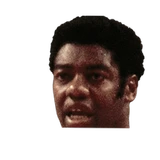

And then Embry added:
“We asked Kareem if there was dissatisfaction with us and he said, no, he just wanted to be traded from Milwaukee. He said his lifestyle and the lifestyle in Milwaukee were not compatible.”
3 quotes from Wayne Embry about 3 other people around the NBA, newest first. Each one links to its original source.

Oscar Robertson1 quoteAnd then Embry added:
“We asked Kareem if there was dissatisfaction with us and he said, no, he just wanted to be traded from Milwaukee. He said his lifestyle and the lifestyle in Milwaukee were not compatible.”
“I've observed Danny Ferry and his family for many years and I can say Danny Ferry is not a racist,”
So Robertson deserves to be included in the GOAT discussion along with Jordan and James, Embry was asked.
“I think it's the others who should be included in the discussion,'' he said, emphatically. Kareem Abdul-Jabbar, 66, agrees. According to an article by Steve Aschburner on NBA.com, Abdul-Jabbar, who won an NBA title with Robertson in Milwaukee in 1971, recently weighed in on the subject, telling ESPN Radio,”